神奈川県川崎市中原区・1933年創立
板厚 0.01mm から、
1個でも承ります。
髪の毛のおよそ8分の1の薄さから、精密板金加工を行っています。人工衛星の部品、H2ロケットの搭載部品、医療機器の筐体。機械では難しい加工も、職人の手作業で精度を出します。リピート注文なし・1pcのみのご注文も歓迎です。
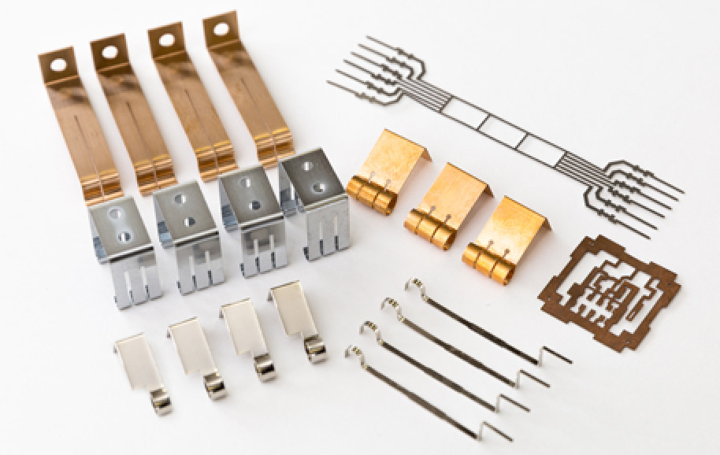
0.01mm〜
対応できる板厚
1pcから
最小ロット
1,000社以上
50業種での取引実績
3工場
川崎・勝浦・十日町
0.01t
薄いものほど、難しい
0.1mm以下の薄板の精密板金加工から、デザイン性の高い筐体の製造まで、すべて社内で製造しています。0.3t〜0.01tの薄板加工は、小ロットでも承ります。
機械での対応が難しい加工も、手作業で精度の高い仕上加工ができるのが当社の強みです。高品質であることが必須な人工衛星の部品や医療機器の筐体を手がけてきました。
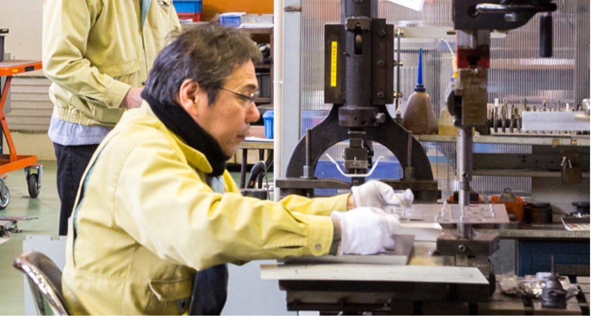
1pcのみ、繰り返しなしでも
リピート注文のない、1個だけのご注文も大歓迎です。保有設備が多数ありますので、筐体のような製品でも試作から50pc程度の量産まで対応できます。
ポンチ絵・構想だけでも
図面が固まっていなくても構いません。手書きやポンチ絵、構想の段階からご相談ください。お見積りフォームでは手書き図面の添付も受け付けています。
高反射材にも対応
最新のファイバーレーザー加工機により、銅・真鍮・アルミといった高反射材のレーザー切断加工が可能です。3軸リニアドライブ搭載で、公差百分台の維持が必要な製品も1pcから対応します。
TECHNOLOGY
加工技術
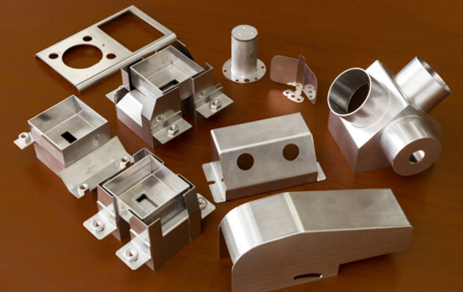
ファイバーレーザー
高反射材の加工に対応し、板厚0.1mm〜、1pcからの製造が可能です。レーザ切断により複雑な形状の製品にも短納期で対応できます。電極製作等の実績があります。
切断穴あけブランク加工銅・真鍮・アルミ
YAGレーザー溶接
薄板（0.3mm〜0.5mm）でも歪みを最小限に抑え、仕上がりのきれいな溶接加工ができます。ビード部も仕上げなしで非常にきれいに仕上がります。
溶接＆仕上げ
薄板・小物の溶接から筐体の溶接まで対応します。外観が重要となる筐体も、溶接部を丁寧に仕上げられます。
曲げ加工
特殊なR曲げにも対応します。汎用型と溶接の組み合わせにより、デザイン性の高い筐体でも特殊金型への投資を最小限に抑えられます。
バリ取り・検査
板厚0.1mmのバリ取りにも対応。検査ではキズ・打痕を防ぐ扱いを徹底しています。
筐体は一貫で
筐体設計、加工、表面処理、溶接、組立までお任せいただけます。角部などにR形状を多用するデザイン性の高い筐体でも、多数の実績があります。
受注から検査まで
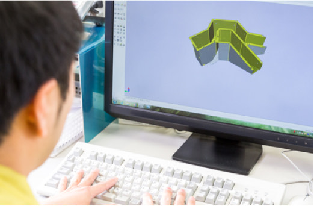
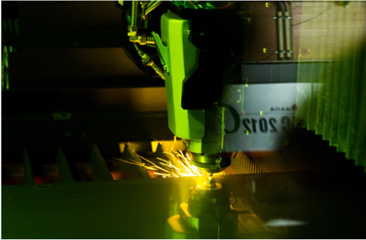
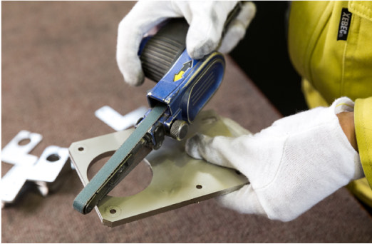
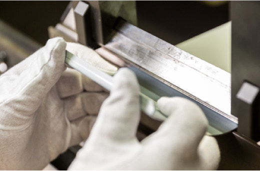
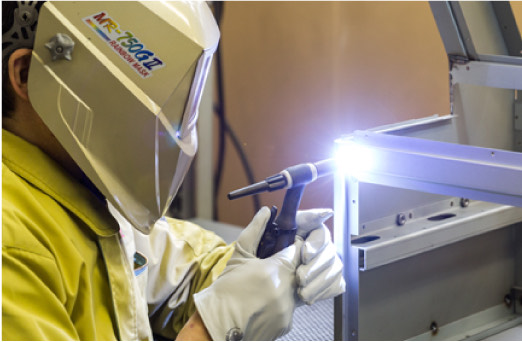
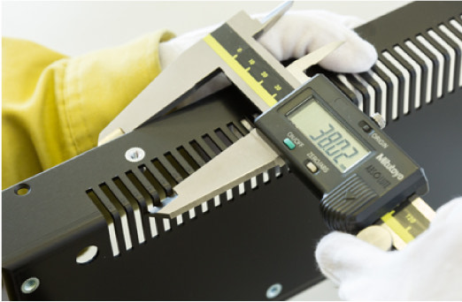
| 項目 | 内容 |
|---|---|
| 材料の種類 | 依頼の多い材料：A5052P／C1100P／C2801P／SPCC／SECC／SUS430／SUS304 |
| 材料の厚さ | t = ○○ mm ※ 0.1mm以下の薄板加工もご相談ください |
| 製品の大きさ | 展開時の縦 × 横（mm） |
| ロット | ○○ pc ※ 5,000pcを超える場合はお受けできないことがあります |
| 納品場所 | 都道府県を指定 |
| 図面 | 任意。手書き・ポンチ絵でも可（JPEG／PDF／PNG／GIF、5MBまで） |
WORKS
これまでに手がけたもの
精密板金加工とアルミ溶接加工の受託事業を展開しています。50業種1,000社以上の実績があります。
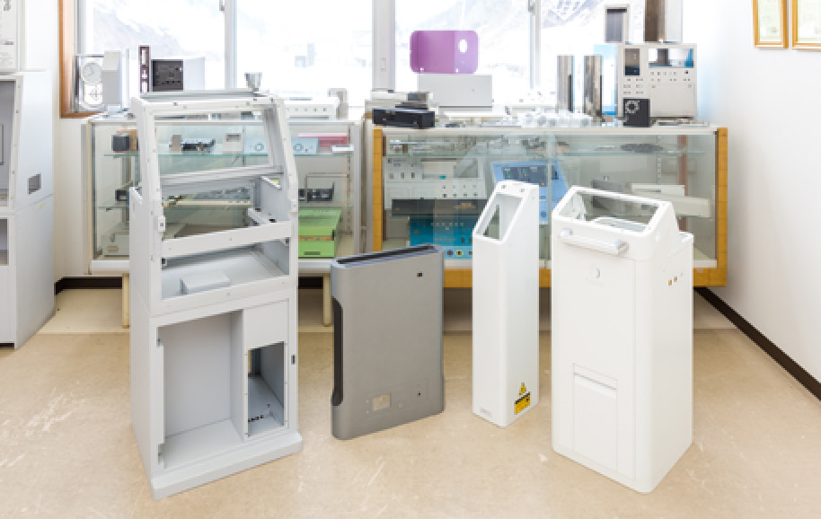
筐体
- 水質ろ過装置
- 血液分析装置
- 地すべり検査装置
- 食用油再生装置
- カード清算機
- 自動車板金溶接機
- 自衛隊仕様収納箱
- 低周波治療機（医療機）
- 食品検査装置
機工
- 惑星探査人工衛星機部品
- H2ロケット搭載部品
- 通信機取付ブラケット／金具／シャーシ
- 機械加工機 機工部品
- 多孔式放熱板（ヒートシンク）※現行サイトの表記は「ヒートシング」
- 業務用デジタル印刷機 工部品
- 機械操作パネル
- 露光装置 機工部品
- 大型洗浄機 械工部品
PLANTS
3つの工場
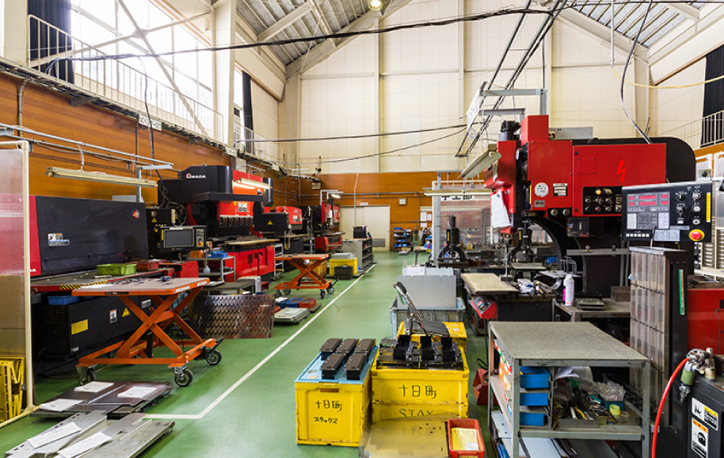
本社（神奈川県川崎市）
神奈川県川崎市中原区下沼部1750
TEL 044-433-1611（代）／FAX 044-433-2218
スタックス勝浦（千葉県）
人工衛星やH2ロケットなど、高い技術力を求められる薄板板金加工に特化しています。0.3t〜0.01tの薄板の精密板金加工なら小ロットでも対応可能。職人にしかできない手作業での精度の高い仕上加工ができるのも勝浦工場の特長です。
千葉県勝浦市名木85-1
スタックス十日町（新潟県）
廃校になった小学校の校舎と体育館を活かした工場で、ファイバーレーザーなど大きな設備が整っています。医療機器の筐体の製造などを行っています。
新潟県十日町市丁60番地（旧六箇小学校）
TEL 025-761-7731（代）／FAX 025-761-7741
COMPANY
会社案内
「不易流行の精神」100年企業を目指す
当社は設立から70年を超える歴史の中で、時代の変化、業界の変化に対応すべく大小さまざまな変化を遂げてきました。これらは先達の知恵と努力により成し遂げられたものであり、そのすべてが現在の人工衛星部品製造や医療機器部品製造をはじめとする先端産業への参画を可能にした大きな礎になっています。
「企業として変えてはいけないもの」と「変わっていかなくてはならないもの」。この2つを見極め、自発的な進化を繰り返し、スタックスを100年企業へと導くことで、すべてのステークホルダーにご満足いただくことを目指しています。
— 代表取締役社長 星野佳史
- 会社名
- 株式会社スタックス（Stax inc.）
- 創立年月日
- 昭和8年（1933年）3月1日
- 設立年月日
- 昭和28年（1953年）11月25日
- 社名変更
- 平成4年（1992年）4月1日（旧・大星工業株式会社）
- 資本金
- 3,300万円
- 創業者
- 星野 重夫
- 会長
- 星野 妃世子
- 代表取締役社長
- 星野 佳史
- 本社
- 〒211-0011 神奈川県川崎市中原区下沼部1750
TEL 044-433-1611（代）／FAX 044-433-2218 - スタックス勝浦
- 千葉県勝浦市名木85-1
- スタックス十日町
- 新潟県十日町市丁60番地（旧六箇小学校）
TEL 025-761-7731（代）／FAX 025-761-7741 - 事業内容
- 精密板金加工／アルミ溶接加工の受託
- 営業時間
- 8:30〜17:30（土日休み）
沿革
- 1953（昭28）
- スタックスの前身、エッキス製薬株式会社を設立
- 1958（昭33）
- 板金部門を設立し、社名を大星工業株式会社に改名
- 1971（昭46）
- 大星工業 十日町工場を仮工場で設立
- 1975（昭50）
- 現在の地に土地を所有（250坪）し、新工場にて操業
- 1979（昭54）
- 十日町第二工場を設置（アルプス電気 巻線加工）
- 1987（昭62）
- 勝浦工場を設立（本社工場を移設）
- 1990（平2）
- 勝浦工場を増設
- 1991（平3）
- 十日町工場を増設
- 1992（平4）
- 星野妃世子が社長に就任、星野重夫が会長に就任
- 2004（平16）
- 十日町事業所を増設
- 2020（令2）
- 星野佳史が社長に就任、星野妃世子が会長に就任
※ 現行サイトの会社情報には「創立年月日 昭和8年3月1日」とありますが、沿革は1953年（昭和28年）の前身会社設立から始まっています。両方をそのまま掲載しています。
本社所在地
図面がまだでも、ご相談ください。
ポンチ絵のみ・構想だけでも構いません。0.1mm以下の薄板の精密板金加工、デザイン性の高い筐体の製造。1個からお受けします。
044-433-1611
営業時間 8:30〜17:30（土日休み）／FAX 044-433-2218
〒211-0011 神奈川県川崎市中原区下沼部1750